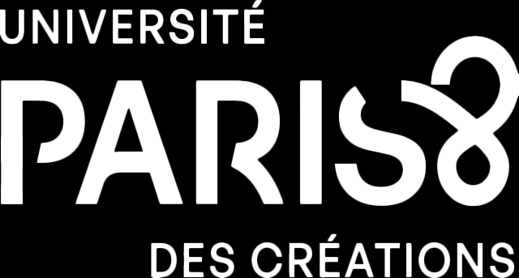

Le DSAA forme au design d'expérience. En lien avec le monde de la culture, de l'évènementiel et de la communication, les domaines du design graphique et interactif, il interroge les possibilités créatives des technologies pour concevoir et réaliser des expériences inventives pour les environnements d'aujourd'hui et de demain : interactifs, visuels, animés, sonores, augmentés, immersifs.
